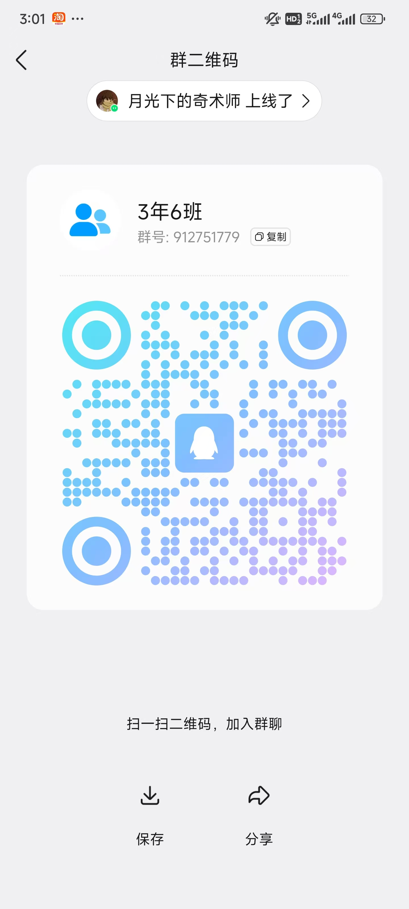

一起把鲸台用得更好。
加入交流群，分享使用经验、反馈问题，也欢迎提出新想法。
QQ 交流群

912751779
群名：3年6班
打开 QQ 扫一扫，或搜索群号申请加入。
二维码失效时可尝试搜索群号；是否能加入以群设置为准。
Windows 安装与首次使用
- 从项目 Releases 下载 Windows 安装包。若尚无安装包，可按仓库安装说明从源码运行。
- 运行
WhaleDesk-版本号-Setup.exe，按向导选择安装位置；更新前先保存任务并退出旧窗口。 - 启动鲸台，点击「添加本地文件」，选择文档并预览正文。
- 输入需求，先检查发送内容，再发送给 DeepSeek。网页不可用时使用普通浏览器配合复制任务、粘贴计划。
- 检查行动计划后执行，结果可在本地回执中查看。
遇到问题
当前开发预览版的内置 DeepSeek 连接仍可能报 ERR_CONNECTION_CLOSED，尚未确认修复。普通浏览器可用不代表内置连接一定可用。
请反馈应用版本、Windows 版本、复现步骤与错误提示。截图前遮盖个人文件、账号和聊天信息；不要发送 Cookie、密码或密钥。
目前支持 DOCX、XLSX/XLSM、文字 PDF 和常见文本；压缩包、扫描件 OCR、图片和 CAD 原生内容暂不支持。